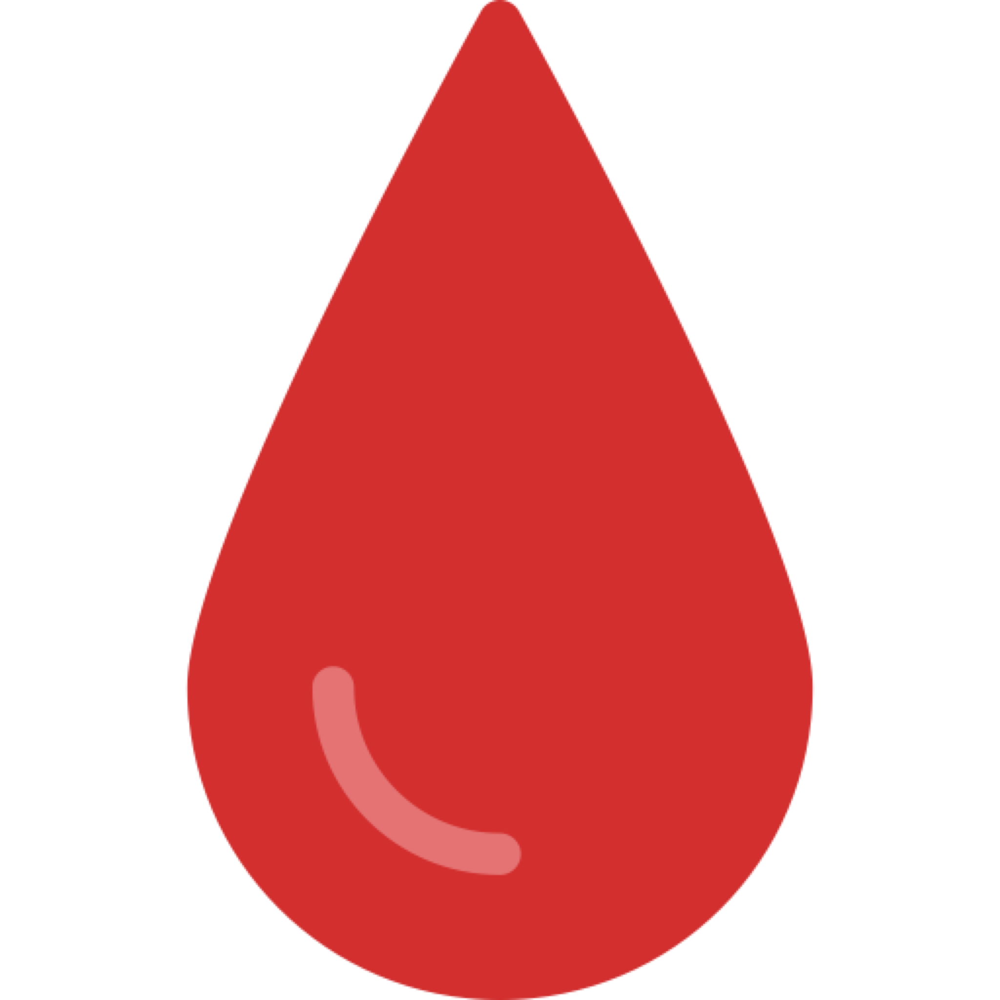
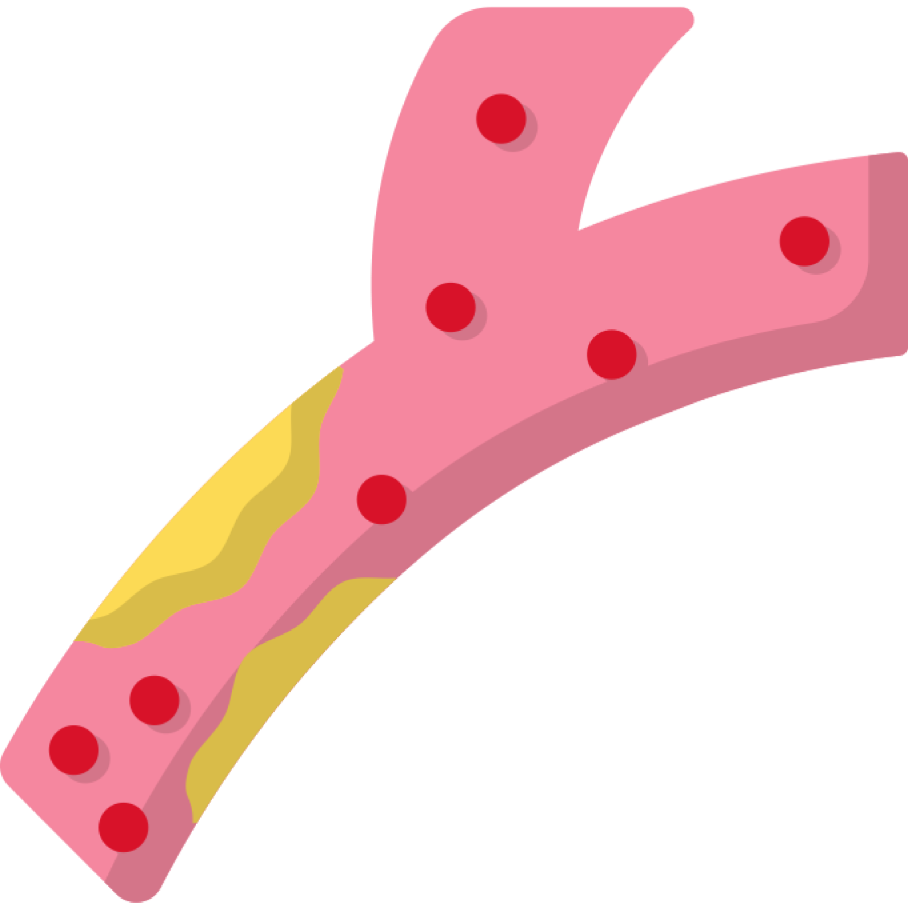

قم بفحص الهيموجلوبين ، ضغط الدم والكوليسترول
إذا كان تحكمك في الجلوكوز مستقرًا وكانت نتيجة تحليل الهيموجلوبين السكري A1C ضمن نطاقك المستهدف، فيجب أن تُجري تحليل A1C مرتين سنويًا على الأقل. إذا كان تحليل A1C أعلى من نطاقك المستهدف أو إذا تغير دواء السكري الخاص بك، فيجب أن تُجري تحليل A1C مرةً كل ثلاثة أشهر.
-

تحليل الهيموجلوبين السكري A1C:
قم بفحص الهيموجلوبين السكري كل 3-6 شهور. سيكون ذلك مرجعاً جيداً لتعرف مقدار تحكمك بمرض السكري. اهدف للحصول على نسبة 7% أو أقل.
-
ضغط الدم:
قم بفحص ضغط الدم عند زيارة الطبيب أو في المنزل اذا كنت تملك جهاز ضغط الدم. اهدف للحصول على 80/130 مم زئبق أو اقل.
-

الكوليسترول
قم بفحص البروتين الدهني منخفض الكثافة (الكوليسترول الضار) مرة واحدة سنوياً على الأقل. اهدف لنسبة أقل من 100 مج/دل.